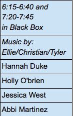
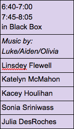
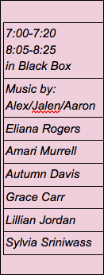

Dance
In the black box
Two perspectives are happening at the same time. One person feels society expects too much from her, the other feels people don't expect much at all from him. Dancers generated movement based on qualities they admire in others and then used choreographic tools (Accumulation, Co-Op and Canon) to express the Too High-Too Low Expectation theme the musicians composed. There is a moment when all performers realize that even though they are coming from different perspectives, they are saying the same thing. This piece is exploring the extreme difference between introverts and extroverts and the idea of being too outspoken or too under-spoken. Dancers generated movement based on quilted they admire in someone and then used choreographic tools (Accumulation, Co-Op and Canon) to express introvert/extrovert-ness. There is a moment when all performers realize that even though they are coming from different perspectives, they are saying the same thing. 
This piece is about an outsider looking in and an inside not trying to stand out. Dancers generated movement based on attributes of others that "get under their skin" and then used choreographic tools (Accumulation, Co-Op and Formations) to manipulate their movement to express outsider-looking-in and insider-not-standing-out. There is a moment when all performers realize that even though they are coming from different perspectives, they are saying the same thing.  Dancers: Sophia Carter, Maria Morell, Emily Pulyer, Ian Wessner, Morgan Whiteside, Amelia Yodice Music: ____(Terilynne?)__ Performances in Black Box at 6:15 and 7:20